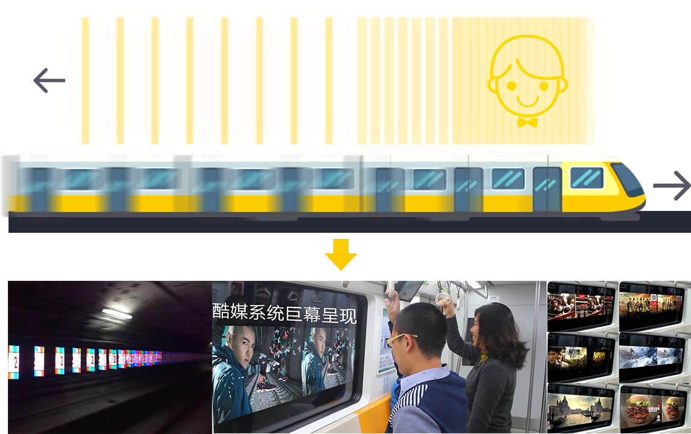

Coolway system is not only the advertising media platform, but also change the way passengers` experience. Base on "zoetrope" from the Persistence of Vision Method, It is installed on the side of metro tunnel walls. While the trains are passing by, the passengers can see series of animated images outside the train windows.
One pillar implements one 2D image based on after-image effect and a series of pillars imply into frames resulting in 15 seconds moving pictures
